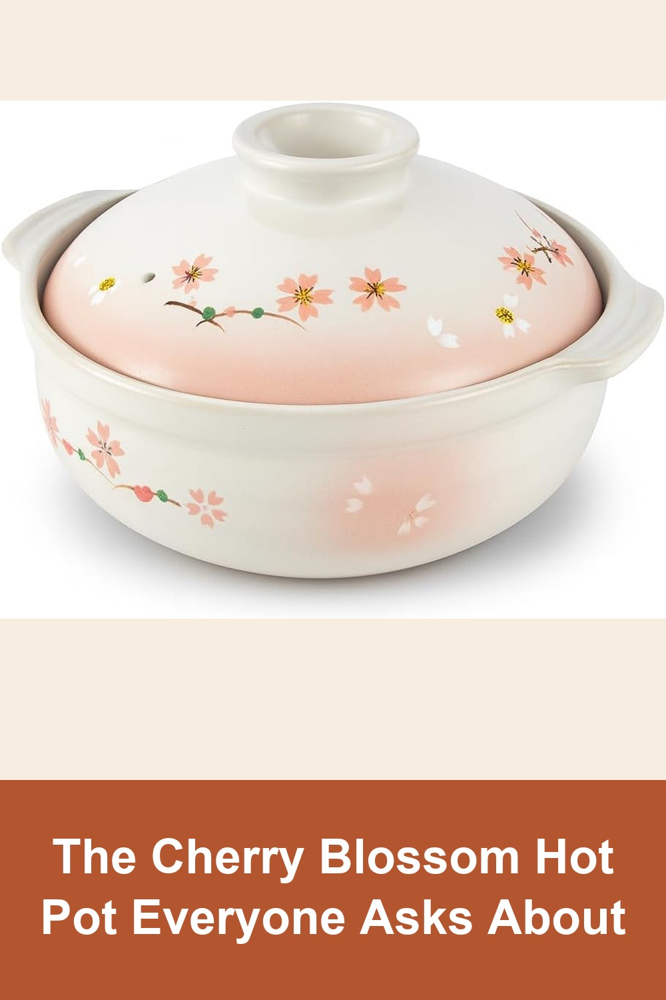
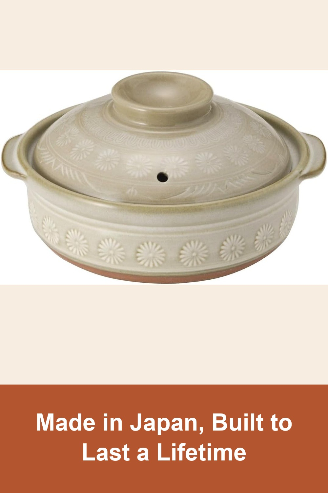
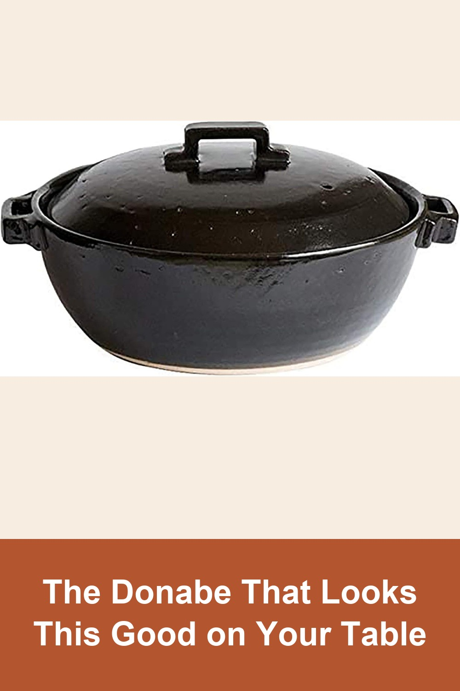

JapanBargain Cherry Blossom Donabe Clay Pot, 9.25 inch
A classic Japanese donabe with a hand-painted sakura design — porous clay walls heat slowly and evenly, so soups and hot pot stay simmering long after it leaves the stove. Serves 3-4.
I've had this same exact pot for 10 years. I just bought this one for another family member. Over time the color turns a creamy pink. I love it.— verified Amazon buyer
View on Amazon →
TIKUSAN Donabe Japanese Hot Pot, Banko Ware, Made in Japan
Crafted from genuine Banko-yaki clay in Mie, Japan — the same pottery tradition Japanese households have trusted for generations. Goes straight from stovetop to table.
So beautiful! I ordered the 9 go and it's huge. I love it! I made chicken adobo and it went really well. Kept the food warm while we eat. It was also easy to clean. A little expensive but worth it I guess.— verified Amazon buyer
View on Amazon →
Modern Black Donabe Clay Pot, Square Handle, 2000ml
A sleek matte-black take on the traditional clay pot — sturdy square handles and a deep glaze finish that looks as good served at the table as it does simmering on the stove. Serves 3-4.
When my pot arrived, the shipping box was SMASHED. However, the pot was in a second box inside. The Japanese know how to pack. The pot was undamaged. It's clearly hand-made and is decorative as well as useful.— verified Amazon buyer
View on Amazon →